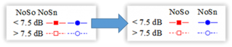

FAQ-829 凡例のテキストを右揃えにしたり、凡例を水平に配置するにはどうすればよいですか？
Change-alignment-in-legend
最終更新日：2023/6/2
デフォルトでは、凡例テキストは左揃えです。凡例テキストを右揃えにするには以下のように操作します。
- システム変数 @MCLA = 1に設定します。システム変数値の変更方法についてはこのFAQを参照してください。
- 凡例オブジェクトを選択して、書式ツールバーの左揃えボタン
 をクリックして右を選択（中央を選択すると中央揃えに設定）します。
をクリックして右を選択（中央を選択すると中央揃えに設定）します。
- 凡例オブジェクト上でクリックし、右クリックしてプロパティを選択します。テキストオブジェクトダイアログのテキストタブで、位置合わせドロップダウンリストから選択します。
 | 凡例の配置をより詳細に制御したい場合は、凡例要素の配置を参照してください。
|
- 凡例を選択して、凡例の境界幅を表示します。
- CTRLを押しながらドラッグして凡例を移動させます。

セル内のアンカーとなるオブジェクトの右側にセルアンカー\^()を追加します。詳細は、FAQ-1168 凡例内のシンボルを揃えるには？を参照してください。
キーワード:凡例, 揃え, 右揃え, 水平, 凡例テキスト